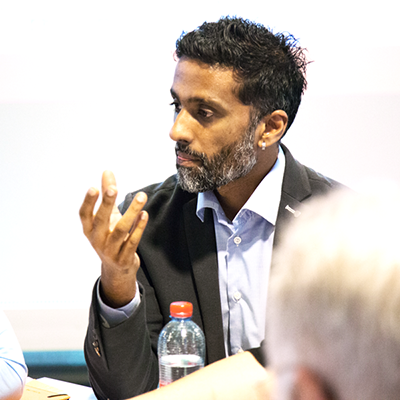
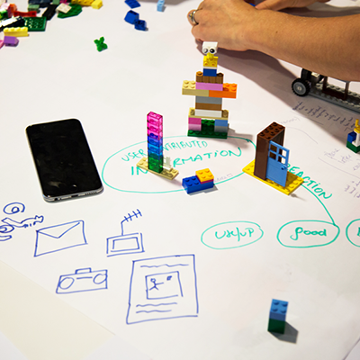

Participant from org name
"Someone's noble comment from the workshop goes here"

Coming to The Hague, The Netherlands in
OCHA is establishing a new Centre for Humanitarian Data in the Netherlands for an initial three year period, from 2017-2019. The vision is to create a future where all people involved in a humanitarian situation have access to the data they need, when and how they need it, to make responsible and informed decisions.
The Centre’s data services work will include: a) direct management of the Humanitarian Data Exchange (HDX) and support to other platforms; b) data standards adoption, including for the Humanitarian Exchange Language (HXL) and the International Aid Transparency Initiative (IATI); and c) data visualization and reporting.
The Centre will offer in-person and remote training programmes for technical and non-technical users of data. The Centre will also manage a data fellows programme that will place data scientists and design researchers in partner organizations and OCHA offices to work alongside staff to build capacity.
The Centre will lead OCHA’s data policy work and offer support to partners on using data responsibly. Safeguarding privacy and ensuring sensitive data is handled appropriately are critical issues for the humanitarian community as it becomes more data driven.
The Centre will further build and engage an active community in support of its mission and objectives. We will do this by a) creating physical and virtual spaces to work together on data challenges and b) creating a transparent collaboration model for people, organizations and companies to engage with us.
To learn more about the Centre, download the brochure
Download PDF (2.1MB)Participant from org name
OCHA has seen an increase in demand for its data services in recent years. As the HDX platform has gained traction, a broader set of data-related challenges have become apparent. This includes varying abilities of humanitarians to work with data and the need for frameworks to govern the responsible data use in crisis settings. The Centre will take on this broader set of challenges with the goal of increasing the use and impact of data in the humanitarian sector. The Centre is a key contribution towards the Secretary-General’s Agenda for Humanity under core commitment four - changing the way we work to end need.
The Centre is open to supporting humanitarian partners and OCHA staff in the field and at headquarters who work in both technical and non-technical roles. The partners include UN agencies, international, national and sub-national NGOs, affected people, academia, the private sector, governments and regional bodies involved in humanitarian action.
There will be a number of ways for partners to collaborate with the Centre. This includes information sharing, third-party projects, direct projects and placement of partner staff into the Centre.
The HDX team is working to set up the Centre and several staff will be based in The Hague by mid 2017. The HDX platform and the HXL data standard will be managed through the Centre bringing with them a functioning service model with an active partner network. This ensures that the Centre is not starting from scratch and can draw on the experience of the existing team as it takes on a wider scope of activities.
The Centre will create value over time by sharpening what is known and not known about humanitarian crises. Institutional data sharing agreements, data standards adoption and technical integration will enable data to move faster across partner systems, and from data collection to use. Data science roles and skills will become common in humanitarian operations and there will be more open, co-working spaces for collaboration across institutions and sectors. These changes will lead to a more effective and efficient humanitarian system.
Blurb about when we will have updates to share and why people should sign up